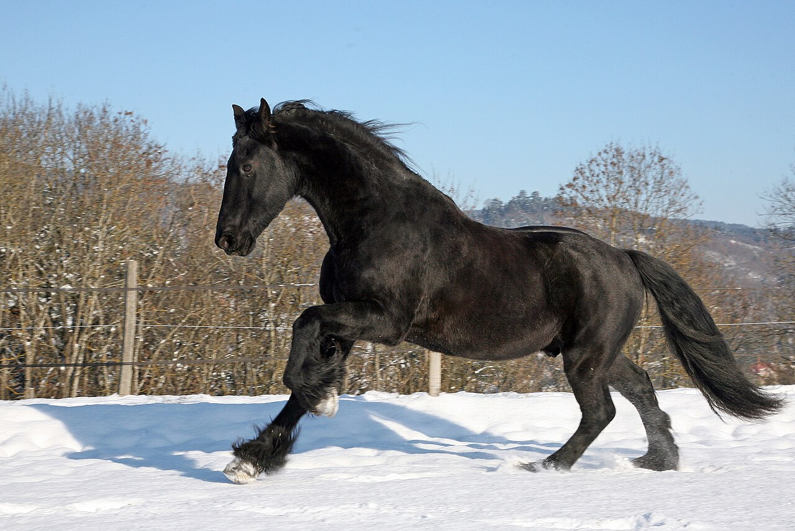
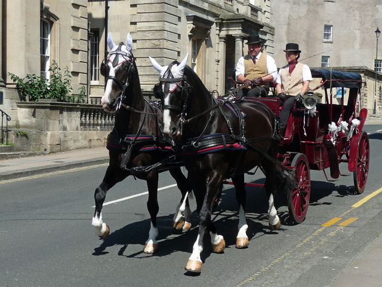

🐴 Black Beauty, the Kind Horse
A Horse Tells His Own Tale!
Black Beauty is a gentle black horse who tells his own life story. Happy meadows, hard times, and kind friends — all through his eyes!

🌿 Chapter 1: A Colt in the Clover Meadow
My name is Black Beauty, and this is my own true story, told in my own words. I am a handsome black horse with one white foot, a glossy mane that shines like spilled ink in the sunshine, and a pretty white star right in the middle of my forehead. When I was a tiny colt, no bigger than a large dog, I lived in a wide green meadow with my dear mother, Duchess. The grass there was soft as carpet, the air smelled of clover and fresh rain, and a little stream chuckled along the bottom of the field where we drank on hot afternoons.
My mother was wise and gentle, and every evening, as the sun turned the clouds pink, she taught me my first big lessons of life. Always be gentle and good, she would whisper, nuzzling my ear. Work hard with a willing heart. And never, ever bite or kick, even when you feel scared or cross, because frightened feet and angry teeth only make the world more frightening and angry. I promised her I would remember her words forever, and I tucked them deep inside my heart like precious apples stored for winter.
In those early days I ran races with the wind, kicked up my heels just for joy, and learned how to stand still while kind hands stroked my nose. I thought the whole world was made of sunshine, sweet hay and love. But I was about to discover that life, like a long road, has sunny stretches and stony, muddy ones too — and that a good heart is the best pair of shoes for the journey.
🏡 Chapter 2: The Happy Years at Birtwick Park
When I was four years old, tall and strong, I was taken to live at a beautiful place called Birtwick Park. Oh, what a paradise it was! The stables were warm and clean, with golden straw deep enough to sink your hooves into, and the paddocks rolled out green and wide under huge shady oaks. My owner, kind Farmer Grey, spoke to horses as if we were his own children, and our groom, gentle John Manly, had hands that could calm even a trembling foal. Little Joe Green, John's boy, brushed me every morning and saved me the sweetest carrots from his lunch.
There I made the dearest friends of my life. Ginger was a brave chestnut mare with a gleaming copper coat and a fiery temper. She had been badly treated as a young horse, and her heart was sore, like a bruise you cannot see. She snapped and stamped at first, but I learned that her anger was really old pain talking. Then there was Merrylegs, a round, fat, merry little pony who adored the children and would trot for miles without ever growing tired. Together we pulled carriages down sunny country lanes, the harness bells jingling like music, while birds sang in the hedges and butterflies danced over the wild roses.
On summer evenings, after our work was done, John would loosen our harnesses and let us roll in the cool grass, groaning with happiness. I thought those days would last forever. But horses do not choose their owners, just as clouds do not choose the wind. One autumn morning, with mist curling over the fields, I heard words that made my ears droop: Beauty is to be sold. My heart thumped like a blacksmith's hammer, but I remembered my mother's voice: be brave, be good, and trust that kindness will find you again.
But horses do not choose their owners, just as clouds do not choose the wind. One autumn morning I was sold away from Birtwick, and my heart thumped like a blacksmith's hammer.
🌧️ Chapter 3: Hard Times in London
London was a shock after green Birtwick. Instead of birdsong there was the endless clatter of wheels on cobblestones, thick yellow fog that stung my eyes, and rain that soaked through my coat for hours. I pulled cabs and carriages from morning till night, my legs aching on the slippery stones, while grand ladies in feathered hats never once looked at my tired face.
Some owners were kind. Dear Jerry, the cab driver with the twinkling eyes, rubbed my nose every morning, covered me with a warm blanket in the cold, and always gave me Sundays to rest in a quiet yard. But others were cruel in ways that still make me shiver to remember. They fastened a sharp bearing rein over my head, yanking my chin up toward the sky until my neck burned and I could hardly breathe. It was fashionable, they said, for horses to look proud — but pride should never be carved out of pain. Drivers cracked long whips to make us gallop through rain and fog, though our hooves slid and our chests heaved.
The hardest pain was watching my friend Ginger suffer beside me. The fiery copper mare I had known grew thin and dull-eyed, her brave spirit flickering like a candle in the wind. One rainy night she whispered, They have worn me out, Beauty. There is nothing left in me. Soon after, she was gone, and I never saw her again. I cried horse tears that night, hot and silent, and I promised her memory that I would stay gentle no matter how hard the world became.

Photos: Black horse © Fchosson (CC BY-SA 3.0) via Wikimedia Commons; Carriage © Geograph contributor via Wikimedia Commons
🏡 Chapter 4: Kindness Finds Me Again
Years rolled by like carriage wheels, and I grew old before my time. My glossy black coat turned dusty, my knees trembled on the cold stones, and my proud star seemed to fade. I was sold again and again, each time for fewer coins, until at last a kind farmer bought me for very little and led me to a sunny field of buttercups to rest. The grass was soft, the stream was cool, and for the first time in years nobody shouted or cracked a whip. I thought my story was quietly ending there, like a sunset sinking behind a hill.
Then one soft summer evening, I heard footsteps on the grass and a familiar voice calling, Black Beauty? Is it really you? It was Joe Green — little Joe from Birtwick Park, all grown up into a tall, strong man with the same gentle eyes! He threw his arms around my neck and cried happy tears into my mane. I nickered with joy so loud that the birds flew up startled from the hedge. Joe took me home to a cozy stable with deep straw, sweet hay and an apple tree outside my window. Gentle hands brushed my coat until it shone again, and loving words healed places in my heart I thought were broken forever.
Now I spend my days dozing in the sunshine, telling my story to every foal and child who visits. I have trotted many hard miles, through meadows and mud, through kindness and cruelty, and I have learned the truest lesson of all: treat every animal with gentleness, for we feel joy and pain just as you do. If my tale makes even one driver loosen a tight rein, or one child stroke a horse softly instead of striking it, then every rainy mile was worth the walking.
📚 The full story: Black Beauty by Anna Sewell, 1877 — the horse autobiography that helped ban the cruel bearing rein!
Did you know? Anna Sewell could not walk easily, so horses pulled her little carriage everywhere. She wrote Black Beauty as the horse's own autobiography to stop cruelty. The book helped ban the painful bearing rein!
🥕 Beauty's Kindness Stable!
Tap to give Beauty a treat! Fill 5 carrots and apples to make him happy!
Beauty is waiting… be gentle!
🧠 Comprehension Quiz
1. Who tells the story, and what did his mother teach him in the meadow?
2. Why were the Birtwick Park years so happy?
3. What cruel things happened in London, and who was kind?
4. How does Beauty's story end, and what lesson does he share?
5. Why did Anna Sewell write this book as the horse's autobiography?